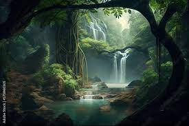

The word nature is borrowed from the Old French nature and is derived from the Latin word natura, or "essential qualities, innate disposition", and in ancient times, literally meant "birth".[2] In ancient philosophy, natura is mostly used as the Latin translation of the Greek word physis (φύσις), which originally related to the intrinsic characteristics of plants, animals, and other features of the world to develop of their own accord.[3][4] The concept of nature as a whole, the physical universe, is one of several expansions of the original notion.

During the advent of modern scientific method in the last several centuries, nature became the passive reality, organized and moved by divine laws. With the Industrial revolution, nature increasingly became seen as the part of reality deprived from intentional intervention: it was hence considered as sacred by some traditions (Rousseau, American transcendentalism) or a mere decorum for divine providence or human history (Hegel, Marx). However, a vitalist vision of nature, closer to the pre-Socratic one, got reborn at the same time, especially after Charles Darwin.